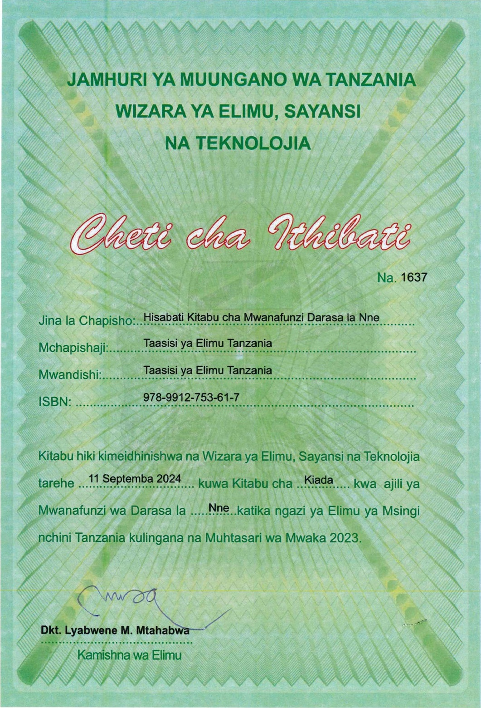

Hisabati. Kitabu cha Mwanafunzi. Darasa la Nne. Maelezo ya picha ya cheti. Hiki ni Cheti cha Ithibati namba 1637 kilichotolewa na Wizara ya Elimu, Sayansi na Teknolojia ya Jamhuri ya Muungano wa Tanzania. Jina la chapisho ni Hisabati, Kitabu cha Mwanafunzi Darasa la Nne. Mchapishaji ni Taasisi ya Elimu Tanzania. Mwandishi ni Taasisi ya Elimu Tanzania. Aiesibini, tisa saba nane, tisa tisa moja mbili, saba tano tatu, sita moja, saba. Cheti kinaeleza kuwa kitabu hiki kiliidhinishwa na Wizara ya Elimu, Sayansi na Teknolojia tarehe 11 Septemba 2024 kuwa kitabu cha kiada kwa mwanafunzi wa Darasa la Nne katika elimu ya msingi nchini Tanzania, kwa kuzingatia Muhtasari wa mwaka 2023. Sehemu ya chini ya cheti ina sahihi ya Daktari Lyabwene Mtahabwa, Kamishna wa Elimu. Chini ya jalada limeandikwa jina la mchapishaji, Taasisi ya Elimu Tanzania.
Hisabati
Kitabu cha Mwanafunzi
Darasa la Nne

Taasisi ya Elimu Tanzania